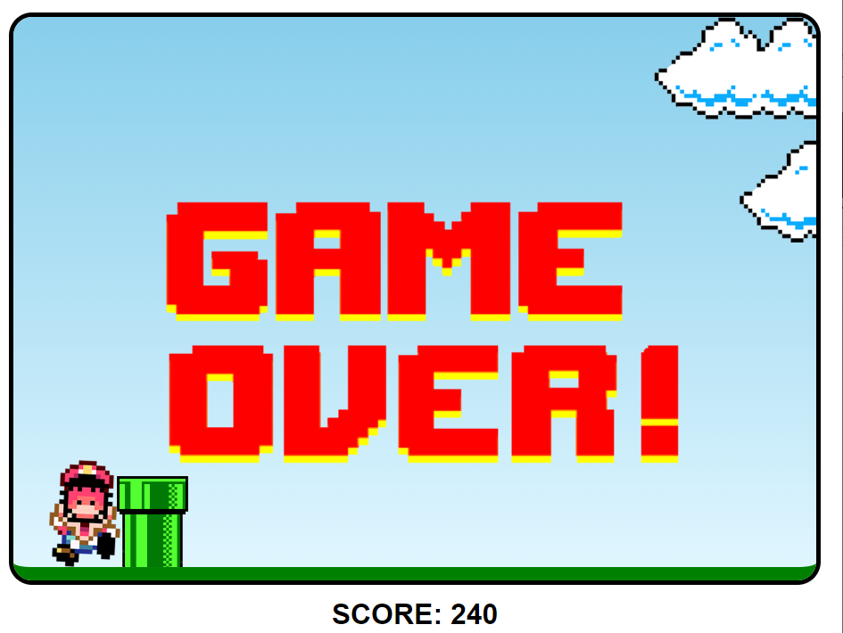

Destaques

Clone Spotify
Clone da página inicial do Spotify, feito durante a imersão front-end Alura.
Ver Detalhes

Mario Jump
Jogo inspirado no famoso Dinossauro do Google, se passando dentro do universo do Mario.
Ver Detalhes
Workspace
Inspirado no Workspace do Google, feito para centralizar as aplicações e planilhas que a equipe utiliza no dia a dia.
Ver Detalhes